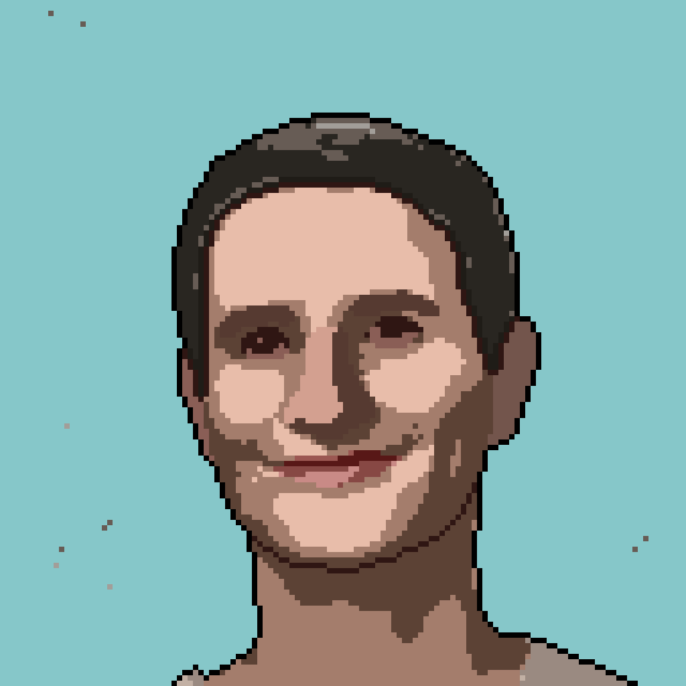

Senior Applied AI who designs agentic systems, context engineering workflows, and evaluation-driven LLM automation for enterprise use cases. 8+ years in analytics and data, expert on multi-agent architecture, retrieval pipelines, and cost-aware AI tooling that turn unstructured business tasks into reliable production systems. Hands on experience on enterprise data, agentic develop and cloud infra.
Creator of Tokalator: open-source infrastructure for context optimization and cost-aware agent execution across 15 models. Google-certified Generative AI Leader.
Open-source infrastructure for context optimization and cost-aware agent execution. (1) VS Code extension with real-time token budget monitoring, tab relevance scoring, and 11 chat commands; (2) web platform with Cobb-Douglas quality-of-output calculators; (3) reusable catalog of context engineering prompts, agents & instructions. Covers 15 models across Anthropic, OpenAI & Google with formal cost models, caching break-even analysis, and token allocation optimization.


MCP-based multi-agent system for cross-lingual normalization of free-form job titles to O*NET & ESCO taxonomies. Root Content Agent delegates to specialized sub-agents (web search, content extraction, DB queries, trend analysis) with multi-layered memory. Evaluated on 14K+ positions — 72.5% reduction in classification time, 86.2% rule-based accuracy, 95% LLM accuracy (0.94 avg confidence). Accepted as demo paper at ACM CAIS '26.


Agentic workflows across Sales (report automation), Finance (text-to-SQL), and R&D — designed, evaluated, and handed off to enterprise operations. AI-powered feedback automation serving 100+ users with 60% reduction in manual tasks. Token-efficient prompt and context engineering adopted as org standard.
Natural-language to SQL pipeline turning business questions into structured reports. RAG-augmented query generation agent with schema grounding, guardrails for query safety, and human escalation for ambiguous inputs.
Autonomous agents that improve through feedback loops — evaluation-first design with Arize observability, LangSmith tracing, structured failure recovery, and controlled autonomy boundaries.


Senior Applied AI Specialist
Senior Data Product Manager
Business Analyst
Co-Founder
Generative AI, Google Gemini, AI strategy & leadership.
LLM observability, tracing, evaluation and debugging with LangSmith.
Practical AI tools, agents and automation — agentic workflows and enterprise AI delivery.
Agent Systems
- LangGraph / MCP / Agno
- OpenAI Agents SDK
- LangChain
- Agent Eval & Benchmarking
- Observability (Arize, LangSmith)
- Guardrails & Safety
- Agent Garden (Google)
Languages
- Python (FastAPI, Async)
- TypeScript
- SQL / Text-to-SQL
- Pydantic
Data & Retrieval
- PostgreSQL / Supabase
- Azure Synapse / BigQuery
- Vector DBs / RAG
- ETL / Data Ingestion
- DataHub
- Metadata Management
Automation
- n8n
- Power Automate
- GitHub Copilot Workflows
AI Dev Kit
- Docker
- Azure / Google Cloud
- Next.js / React (Vercel, V0)
- VS Code, Claude Code
~ Currently Building
- ├── Long-horizon agent reliability patterns
- ├── Structured evaluation frameworks for agentic systems
- ├── Cost-aware multi-agent orchestration at enterprise scale
- └── Tokalator v2 — expanded model coverage + agent-native context APIs
~ Currently Reading / Shipping
- ├── Agent eval benchmarks beyond single-turn accuracy
- ├── Prompt caching break-even economics across frontier models
- ├── Production traces: what trustworthy autonomy looks like
- └── Open-weights vs. hosted cost curves for agentic workloads